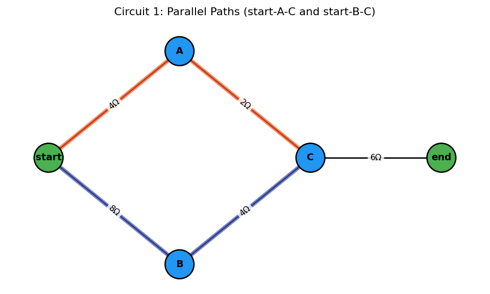
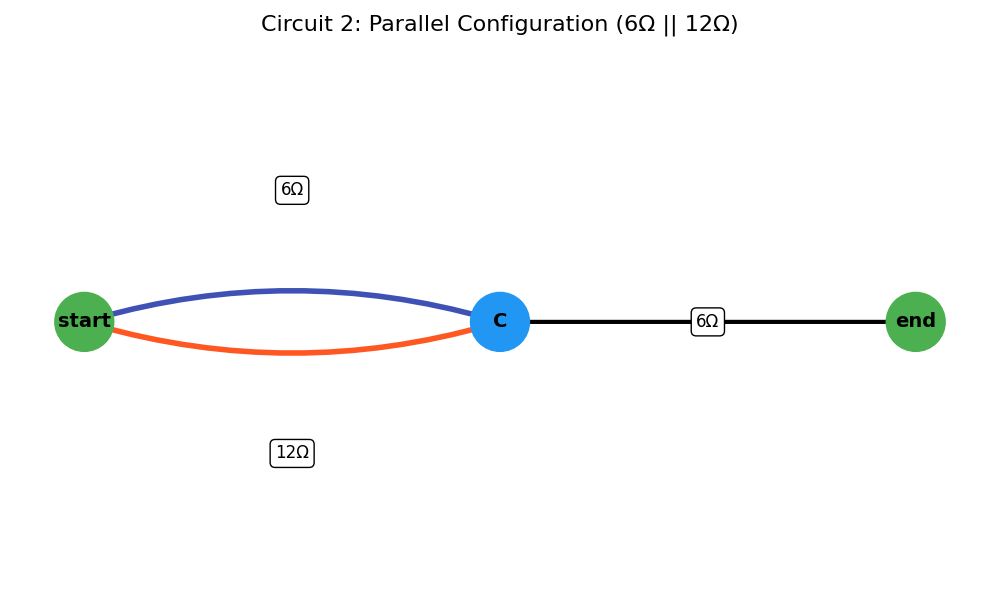
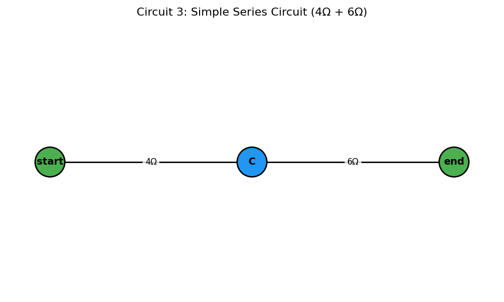
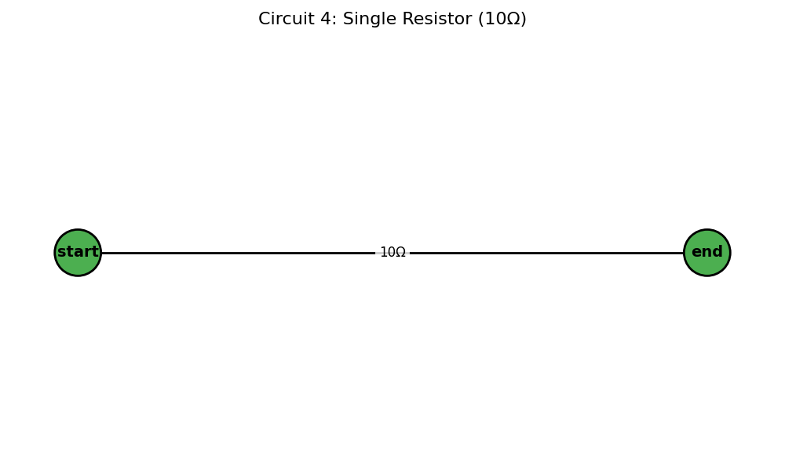

Problem 1
Equivalent Resistance Using Graph Theory
Introduction and Motivation
Calculating equivalent resistance is a fundamental task in circuit analysis. While traditional approaches use series and parallel simplification rules manually, graph theory provides a powerful alternative — transforming circuit analysis into an algorithmic graph simplification process.
Circuits can be represented as graphs: - Nodes = junctions - Edges = resistors (with resistance as weight)
By identifying series and parallel patterns in the graph, we can iteratively reduce it to compute total resistance between two terminals.
This approach is: - Scalable for large networks - Automatable for software - Insightful for understanding electrical connectivity and topology
Learning Goals
After completing this task, you should be able to:
- Represent a resistor network as a weighted graph.
- Apply reduction rules (series and parallel) using graph algorithms.
- Implement an algorithm that simplifies arbitrary configurations.
- Analyze different circuit structures programmatically.
1. Algorithm
The circuit is modeled as a multigraph \(G=(V, E)\), where \(V\) is the set of junctions (nodes) and \(E\) is the set of resistors (edges). Each edge \(e \in E\) has a weight \(r_e\) representing its resistance. Two distinct nodes, start_node and end_node, are specified as the terminals across which the equivalent resistance is sought.
The algorithm proceeds as follows:
-
Initialization:
- Construct the graph from the given circuit components.
- Validate that
start_nodeandend_nodeexist in the graph. Ifstart_node==end_node, the resistance is \(0 \Omega\).
-
Iterative Reduction: Repeatedly apply the following reduction rules until no more simple series or parallel reductions are possible, or the graph is reduced to a single edge between
start_nodeandend_node.-
Parallel Reduction:
- Identification: Find any pair of nodes \((u, v)\) connected by two or more edges (resistors \(R_1, R_2, \dots, R_k\)).
- Reduction: Replace these \(k\) parallel resistors with a single equivalent resistor \(R_p\) between \(u\) and \(v\). The equivalent resistance is calculated as: \(\(R_p = \left( \sum_{i=1}^{k} \frac{1}{R_i} \right)^{-1}\)\) If any \(R_i = 0\), \(R_p = 0\). If all \(R_i = \infty\), \(R_p = \infty\).
- Action: Remove the original \(k\) edges and add a new edge \((u,v)\) with resistance \(R_p\). If \(R_p = \infty\), effectively remove the connection unless it's the only path.
- After a reduction, restart the scan for further simplifications as the graph structure has changed.
-
Series Reduction:
- Identification: Find any node \(w\) such that:
- \(w\) is not the
start_nodeorend_node. - The degree of \(w\), \(\text{deg}(w)\), is exactly 2. Let the two edges incident to \(w\) be \((u,w)\) with resistance \(R_1\) and \((w,v)\) with resistance \(R_2\).
- Ensure \(u \neq v\). (If \(u=v\), it's a loop, not a simple series element in a path from
start_nodetoend_node).
- \(w\) is not the
- Reduction: Replace the two series resistors \(R_1\) and \(R_2\) and the intermediate node \(w\) with a single equivalent resistor \(R_s\) between \(u\) and \(v\). The equivalent resistance is: \(\(R_s = R_1 + R_2\)\) If \(R_1 = \infty\) or \(R_2 = \infty\), then \(R_s = \infty\).
- Action: Remove node \(w\) (which also removes edges \((u,w)\) and \((w,v)\)). Add a new edge \((u,v)\) with resistance \(R_s\). If \(R_s = \infty\), effectively this path segment becomes an open circuit.
- After a reduction, restart the scan.
- Identification: Find any node \(w\) such that:
-
-
Termination and Result:
- The loop terminates if no series or parallel reductions were made in a full pass.
- Ideal Case: If the graph is reduced to a single edge between
start_nodeandend_node, its resistance is the equivalent resistance. - Final Parallel Case: If the graph consists of only
start_nodeandend_nodeand multiple edges directly connecting them, these are in parallel. Calculate their combined parallel resistance. - Non-Reducible Case: If the graph cannot be simplified further by these rules to one of the above states, the circuit may contain non-series-parallel configurations (e.g., a Wheatstone bridge not in balance). The algorithm, in this form, will report that it cannot fully reduce the circuit.
- Open Circuit: If, at any point or at the end, there is no path between
start_nodeandend_node, the equivalent resistance is \(\infty\). - Short Circuit: If an equivalent resistance of \(0 \Omega\) is found.
Series Connection
Two resistors R₁ and R₂ in series:
Parallel Connection
Two resistors R₁ and R₂ in parallel:
Implementation in Python with networkx
Below is a complete Python implementation and visualization of step-by-step circuit simplification using networkx.
code
import matplotlib.pyplot as plt
import networkx as nx
class ResistorNetworkAnalyzer:
def __init__(self):
self.step_count = 0
self.visualization_steps = []
def draw_circuit(self, G, pos, title, highlight_edges=None):
"""Improved visualization function with better highlighting"""
plt.figure(figsize=(10, 6))
# Node styling
special_nodes = ['B+', 'B-', 'start', 'end']
node_colors = ['#4CAF50' if node in special_nodes else '#2196F3' for node in G.nodes()]
nx.draw_networkx_nodes(G, pos, node_color=node_colors, node_size=1800,
edgecolors='black', linewidths=2)
nx.draw_networkx_labels(G, pos, font_size=14, font_weight='bold')
# Draw all edges
nx.draw_networkx_edges(G, pos, width=2, edge_color='black')
# Highlight edges that were modified
if highlight_edges:
nx.draw_networkx_edges(G, pos, edgelist=highlight_edges,
edge_color='#FF5722', width=6, alpha=0.7)
# Edge labels with resistance values
edge_labels = {}
for u, v, data in G.edges(data=True):
if 'resistance' in data:
edge_labels[(u, v)] = f"{data['resistance']:.2f}Ω"
elif isinstance(G, nx.MultiGraph) and G.number_of_edges(u, v) > 0:
# Handle multigraph case
edge_data = G.get_edge_data(u, v)
if edge_data:
first_key = next(iter(edge_data))
edge_labels[(u, v)] = f"{edge_data[first_key]['resistance']:.2f}Ω"
nx.draw_networkx_edge_labels(G, pos, edge_labels=edge_labels, font_size=12,
bbox=dict(facecolor='white', edgecolor='none',
alpha=0.8, boxstyle='round,pad=0.3'))
plt.title(title, fontsize=16, pad=20)
plt.axis('off')
plt.tight_layout()
plt.show()
def combine_series(self, G, pos):
"""Combine series resistors with visualization"""
changed = True
while changed:
changed = False
for node in list(G.nodes):
if G.degree(node) == 2 and node not in ("B+", "B-", "start", "end"):
neighbors = list(G.neighbors(node))
if len(neighbors) == 2:
u, v = neighbors
# Get resistances
r1 = G[node][u]['resistance']
r2 = G[node][v]['resistance']
combined = r1 + r2
# Store edges being combined for visualization
edges_combined = [(node, u), (node, v)]
# Modify the graph
G.remove_node(node)
G.add_edge(u, v, resistance=combined)
changed = True
self.step_count += 1
# Visualize this step
title = f"Step {self.step_count}: Series {u}-{node}-{v} → {combined:.2f}Ω"
self.draw_circuit(G, pos, title, edges_combined)
self.visualization_steps.append((G.copy(), title, edges_combined))
break # Restart iteration after modification
def combine_parallel(self, G, pos):
"""Combine parallel resistors with visualization"""
changed = True
while changed:
changed = False
parallel_pairs = self._find_parallel_pairs(G)
for u, v in parallel_pairs:
edges_data = self._get_parallel_edges_data(G, u, v)
if len(edges_data) > 1:
combined = 1 / sum(1/e['resistance'] for e in edges_data)
# Store edges being combined for visualization
edges_combined = [(u, v)] * len(edges_data)
# Modify the graph
G.remove_edges_between(u, v)
G.add_edge(u, v, resistance=combined)
changed = True
self.step_count += 1
# Visualize this step
title = f"Step {self.step_count}: Parallel {u}-{v} → {combined:.2f}Ω"
self.draw_circuit(G, pos, title, edges_combined)
self.visualization_steps.append((G.copy(), title, edges_combined))
break # Restart iteration after modification
def _find_parallel_pairs(self, G):
"""Find all pairs of nodes with parallel edges"""
pairs = set()
if isinstance(G, nx.MultiGraph):
for u, v, key in G.edges(keys=True):
if (u, v) not in pairs and (v, u) not in pairs:
if G.number_of_edges(u, v) > 1:
pairs.add((u, v))
else:
# For simple graphs, look for multiple edges between same nodes
edges = list(G.edges())
for i, (u1, v1) in enumerate(edges):
for (u2, v2) in edges[i+1:]:
if (u1 == u2 and v1 == v2) or (u1 == v2 and v1 == u2):
pairs.add((u1, v1))
return list(pairs)
def _get_parallel_edges_data(self, G, u, v):
"""Get data for all parallel edges between two nodes"""
if isinstance(G, nx.MultiGraph):
return [G[u][v][key] for key in G[u][v]]
else:
return [G.get_edge_data(u, v)] if G.has_edge(u, v) else []
def simplify_network(self, G, pos, source, sink):
"""Main function to simplify the resistor network"""
self.step_count = 0
self.visualization_steps = []
# Initial visualization
self.draw_circuit(G, pos, "Original Circuit")
# Make a copy to work with
working_graph = G.copy()
# Alternate between series and parallel combinations
prev_edges = len(working_graph.edges())
while True:
self.combine_series(working_graph, pos)
self.combine_parallel(working_graph, pos)
# Check if we're stuck
current_edges = len(working_graph.edges())
if current_edges == prev_edges:
break
prev_edges = current_edges
# Final result
if working_graph.has_edge(source, sink):
final_resistance = working_graph[source][sink]['resistance']
print(f"Final equivalent resistance: {final_resistance:.2f}Ω")
else:
print("Could not reduce to a single equivalent resistance")
return working_graph, final_resistance
# ======= Example Circuits =======
# Circuit 1: Series-Parallel Combination
G1 = nx.Graph()
G1.add_edge('start', 'A', resistance=4)
G1.add_edge('A', 'C', resistance=2)
G1.add_edge('start', 'B', resistance=8)
G1.add_edge('B', 'C', resistance=4)
G1.add_edge('C', 'end', resistance=6)
pos1 = {
'start': (0, 0),
'A': (1, 1),
'B': (1, -1),
'C': (2, 0),
'end': (3, 0)
}
# Circuit 2: Parallel Configuration
G2 = nx.MultiGraph()
G2.add_edge('start', 'C', resistance=6)
G2.add_edge('start', 'C', resistance=12)
G2.add_edge('C', 'end', resistance=6)
pos2 = {
'start': (0, 0),
'C': (3, 0),
'end': (6, 0)
}
# Create analyzer instance
analyzer = ResistorNetworkAnalyzer()
# Analyze first circuit
print("\nAnalyzing Circuit 1")
simplified_G1, R_eq1 = analyzer.simplify_network(G1, pos1, 'start', 'end')
# Analyze second circuit
print("\nAnalyzing Circuit 2")
simplified_G2, R_eq2 = analyzer.simplify_network(G2, pos2, 'start', 'end')




Summary
Graph theory allows us to automatically simplify resistor networks, handle complex configurations, and is highly suited for software tools and educational simulations.
Resources
networkxdocumentation- Circuit visualization tools
- Graph reduction algorithms